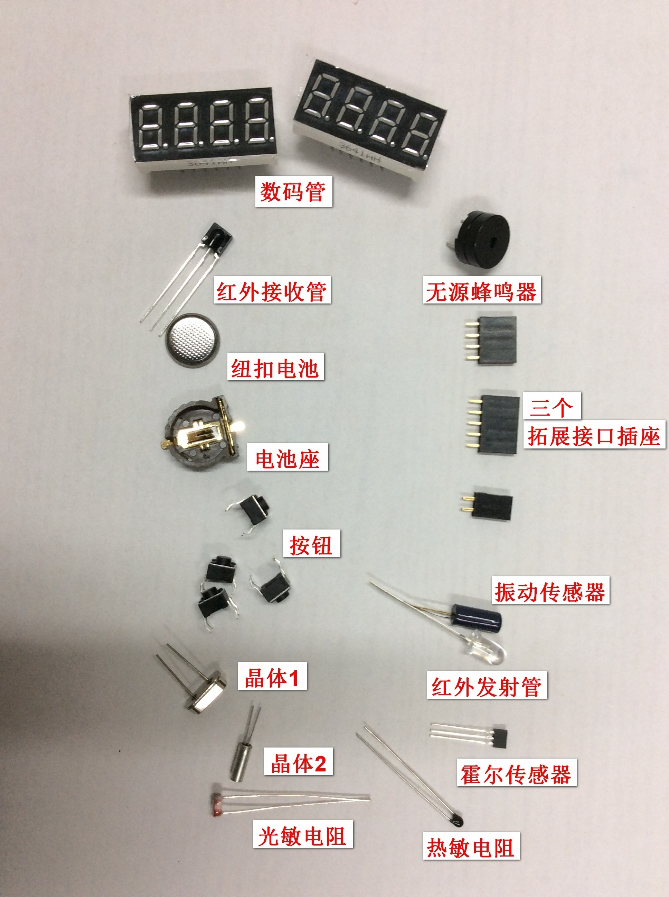
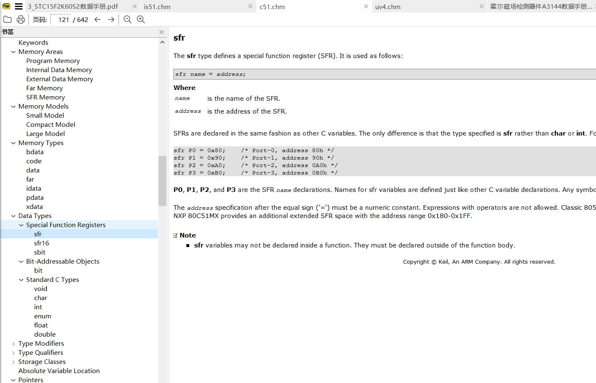
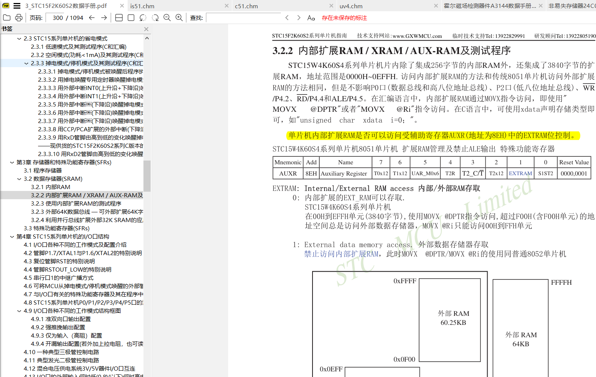
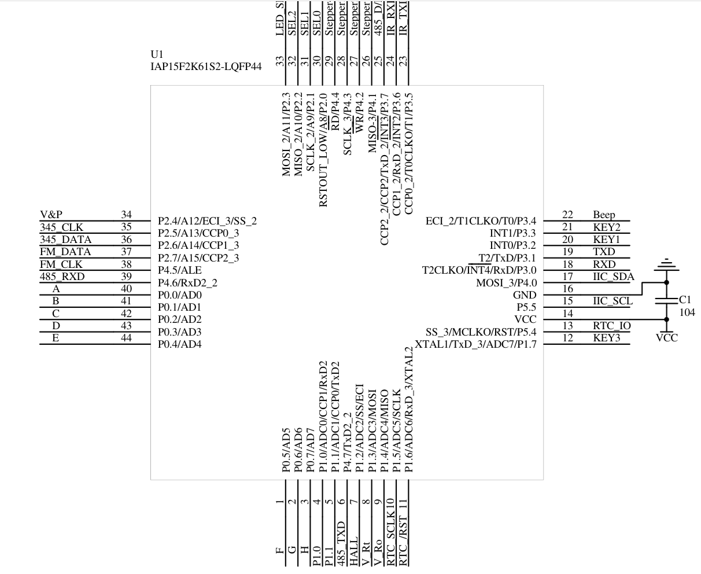
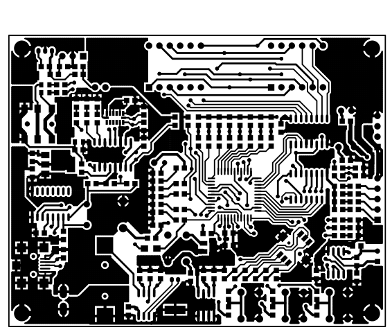
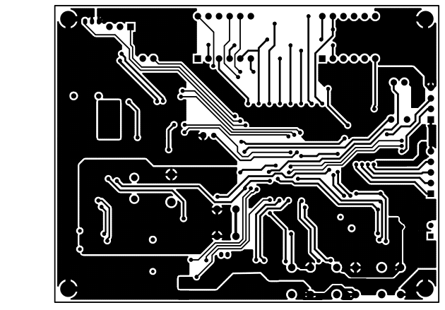

不可视境界线最后变动于：2022年7月1日 上午
实训中期总结
流程
焊接
+认识元器件
焊接前认识并熟悉各个元器件以及电烙铁。

焊接好后学习板如图所示:

注意点
不同元件有不同的焊接需求, 比如电池和蜂鸣器的安装顺序, 光敏和热敏电阻的高度, 其它元件的方向性等问题.
参观贴片生产流程
主要参观了校内的生产流水线, 刷锡膏, 加热等等.
案例学习
这一部分就是板上单片机的熟悉使用, 通过查阅厂家给出的使用手册和Keil的手册, 可以了解案例的代码, 上手修改之后可以更加熟悉单片机编程.


细看手册就行了. 没有什么要特别注意的.
然后分析了一下布线, 更好地了解了该学习板使用的细节.



| 流水灯 |
|
| 八位数码管动态扫描测试 |
|
| 八位数码管滚动显示 |
|
| 八位数码管+流水灯 |
|
| 三按键测试 |
|
| 可变亮度的数码管显示 |
|
| 扫描频率可改变的电子钟 |
|
| 按键消抖计数 |
|
| 乒乓游戏 |
|
| 步进电机测试 |
|
| 可控步进电机 |
|
| 振动传感器 |
|
| 霍尔磁场检测 |
|
| 蜂鸣器测试 |
|
| 可变调的蜂鸣器 |
|
| 电子音乐 |
| 可切换内容的电子音乐 |
| 可振动感应的电子音乐 |
| 振动声光报警器 |
| 显示歌词的ABC英文歌 |
| 看谁手速快 |
| 导航按键测试 |
| 导航键与数字按键结合控制数码管 |
| 温度与光照测试 |
| 光照报警器 |
| 光敏开关 |
| 光敏计数 |
| 串口通信 |
| 485双机通信 |
| 红外测试 |
| 红外通信1 |
| 红外通信2 |
| 格力空调遥控器 |
| 非易失存储器测试 |
| 便携式温度采集器 |
| 实时时钟测试 |
| 可校准的实时时钟 |
| 多功能电子钟 |
| 可与PC通信的实时时钟 |
| FM收音机 |
| 多功能收音机 |
| 扩展接口测试（双通道电压表） |
| 双通道秒表 |
| 比赛发令与双通道计时 |
| 超声波测距 |
| 直流电机控制 |
| 倒车雷达 |
| 电子秤 |
| 电子尺 |
| 电子转角测量 |
| 基于PC的数据采集系统 |
| 基于红外多机通信系统 |
| 红外Ir组网示例 |
通过往年的优秀作品可以多方面的了解利用学习板可以实现的项目.
BSP编程
BSP库由老师写好并封装, 只要简单的调用即可, 体现了软件开发分层分工的思想.
然后写一个工程, 改写了一下BSP的接口, 多了几个头文件.
1
2
3
4
5
6
7
8
9
10
11
12
13
14
15
16
17
18
19
20
21
22
23
| #include "common_include.h"
#include "init.h"
#include "display_decode.h"
#include "callback.h"
#include "state_control.h"
#include "main_loop.h"
void main()
{
global_init();
init_callbacks();
MySTC_Init();
delay_ms(20);
clock_base = RTC_Read();
light_base = adc_res.Rop;
while (1)
{
MySTC_OS();
LED_rotate_disp();
SEG_disp();
}
}
|
init.c:
1
2
3
4
5
6
7
8
9
10
11
12
13
14
15
16
17
18
19
20
21
22
23
24
25
26
27
28
29
30
31
32
33
34
35
36
37
38
39
40
41
42
43
44
45
46
47
48
49
50
| #include "init.h"
#include "callback.h"
code unsigned long SysClock = 11059200;
void disp_init()
{
LedPrint(0);
DisplayerInit();
LedPrint(0);
SetDisplayerArea(0, 7);
Seg7Print(36, 36, 36, 36, 36, 36, 36, 36);
}
void date_init(u_byte y, u_byte mon, u_byte d, u_byte h, u_byte min, u_byte s, u_byte week)
{
struct_DS1302_RTC time;
time.year = y;
time.month = mon;
time.day = d;
time.hour = h;
time.minute = min;
time.second = s;
time.week = week;
DS1302Init(time);
}
void global_init()
{
#if 1
AdcInit(ADCexpEXT);
BeepInit();
disp_init();
date_init(2022, 7, 1, 0, 0, 0, 1);
Key_Init();
VibInit();
#endif
}
|
可拓展之处
可以直接使用BSP库开始写一个小项目了.
遇到的问题
主要的时间花在了手册的阅读之上, 加上BSP库接口和项目结构的调整. 以及电路板线路的布局和各种芯片的手册阅读, 按键红外霍尔等等传感器的使用, 单片机的参数设置等等等. 看就完事了.